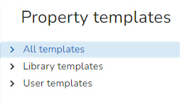
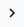
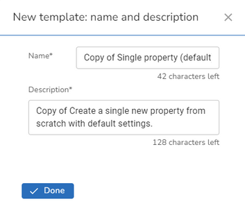
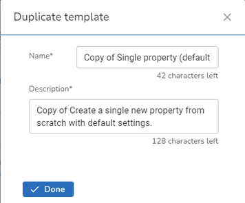
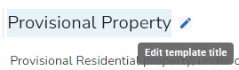
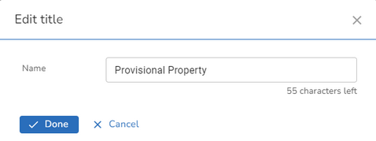
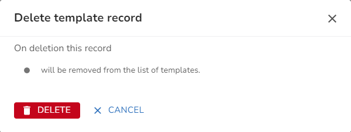

Whenever you add a property, range of properties, child or range of children, a list of templates is displayed for the user to pick the one most appropriate for the type of property or properties they are creating. iManage Cloud comes with default templates for both the single and range create but these do not have any of the property information such as Logical Status, State etc. completed. Setting up defaults for details that will predominantly be the same for every entry speeds up the data entry process considerably. Setting default values does not mean that these cannot be overridden at the time of creating the data it simply populates the initial dialog with the defaults.
If a user has to create a lot of similar properties this can be time consuming and it is much easier to create a specific User template for the task such as creating Provisional Residential Properties.
To maintain your Property templates, click on Property templates under Customisation in the Settings. Templates are split into three groups

Library templates are the default templates that are provided with iManage Cloud, User templates are templates you have created and All templates is a combination of the two. You may expand or collapse groups using the  or buttons beside an entry.
Creating a User template
There are various ways to add a new User template:
•Clicking the Add template button  to invoke the Create new template wizard.
to invoke the Create new template wizard.
•Hover over an existing template and click the Duplicate template icon e.g.
•Select an existing template and click the Duplicate button e.g.
Create new template wizard
•Click the add template button 
•Choose whether you wish to create a template for a single property or a property range.
•From the Create from selection pick the existing template you wish to use as basis for your new template.
•Click Next
•You will see a New template dialog:

•Change the Name and Description to give the user an idea of what type of property this template should be used for and click Done. If you wish to cancel click the X at the top right of the dialog.
•There are three boxes displayed for the different areas of the property BLPU Settings, LPI Settings, and Other Settings (for Cross Reference, Provenance and Note details). Click on a box to edit the details and click Done when finished.
Duplicating a template
•If you select either of the duplicate options you will see a Duplicate template dialog:

•Change the Name and Description to give the user an idea of what type of property this template should be used for and click Done. If you wish to cancel click the X at the top right of the dialog.
•There are three boxes displayed for the different areas of the property BLPU Settings, LPI Settings, and Other Settings (for Cross Reference, Provenance and Note details). Click on a box to edit the details and click Done when finished.
Editing a User template
•Select the User template you wish to edit. If you wish to rename the template hover over the Name and an Edit icon is displayed:

•Click the Edit icon as shown in the above image.

•To edit the details either hover over the Template and select the Edit icon or click on the Template. There are three boxes displayed for the different areas of the property BLPU Settings, LPI Settings, and Other Settings (for Cross Reference, Provenance and Note details). Click on a box to edit the details and click Done when finished.
Note: You will not be allowed to edit a Library template.
Deleting a User template
•To delete a template either hover over the Template and select the Delete icon or click on the Template and select the Delete button  .
.
•You will see a confirmation dialog e.g.

•Click  to delete the template or click CANCEL to return without deleting.
to delete the template or click CANCEL to return without deleting.
Note: You will not be allowed to delete a Library template.